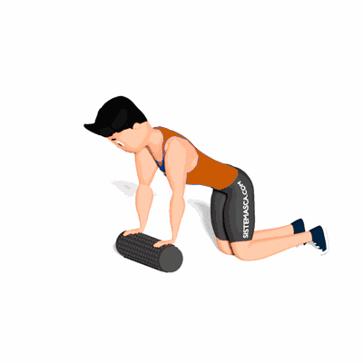

Alongamento Torácico com Foam Roller

O exercício tem como objetivo trabalhar o alongamento da região torácica, preparando para a atividade física.
Ficha Técnica
Tipo: Mobilidade
Grupo Muscular: Peito
Aparelho: Nenhum
Músculos: Nenhum
Como realizar
- Fique em quatro apoios, mantendo as mãos na distância dos ombros sobre um Foam Roller e os joelhos na distância dos quadris;
- Deslize lentamente as mãos para a frente rodando o Foam Roller e abaixando o peito em direção ao chão;
- Mantenha seus braços estendidos sem encostar no chão;
- Permaneça nessa posição pelo tempo prescrito pelo professor e depois retorne lentamente à posição inicial.
 RC STORE
RC STORE